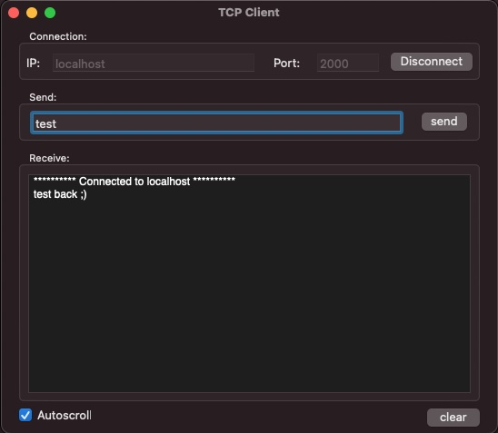

TCP Client
A simple Mac app to connect to TCP servers and send and receive text messages.

About
Connect to any host and port, send text, and watch the replies. Autoscroll and clear included. Handy for debugging devices and network services.
Free and open source. View on GitHub. Also see TCP Server.